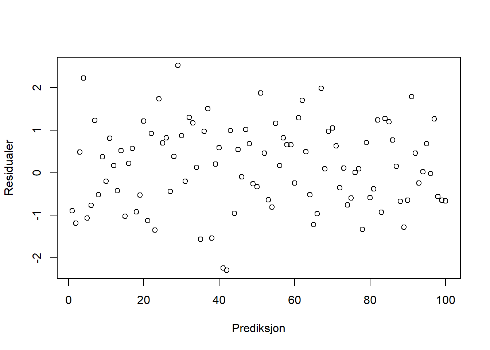
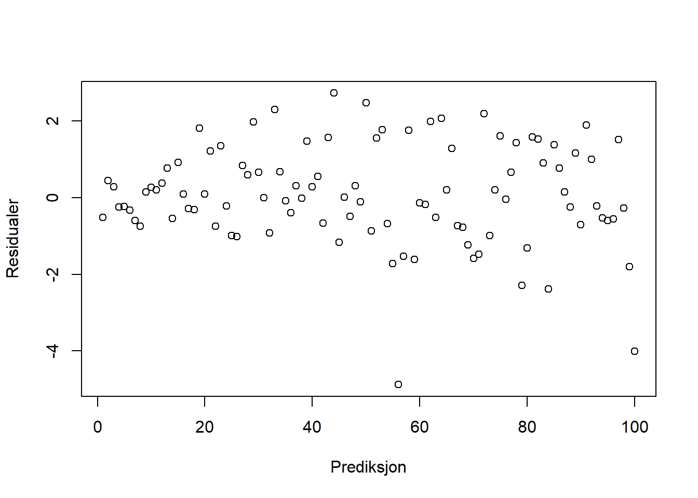
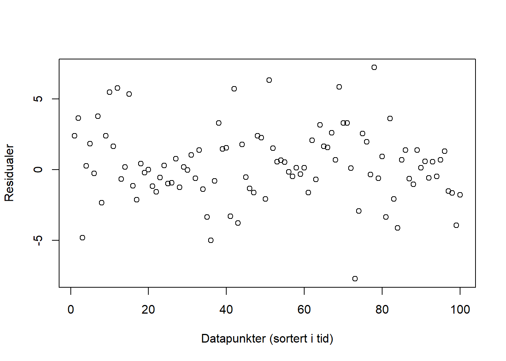
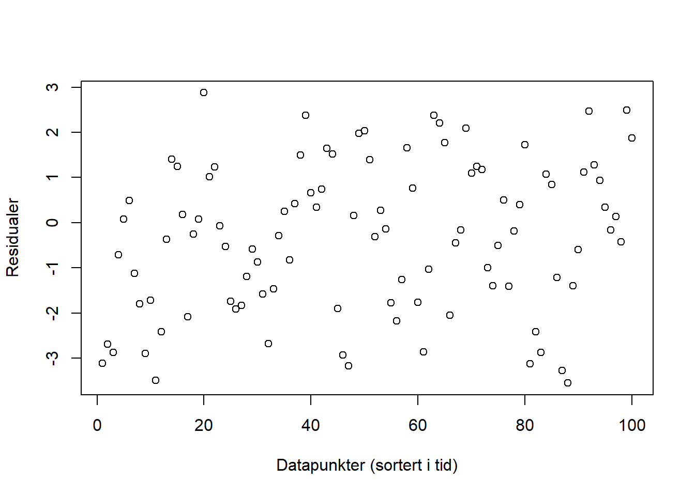
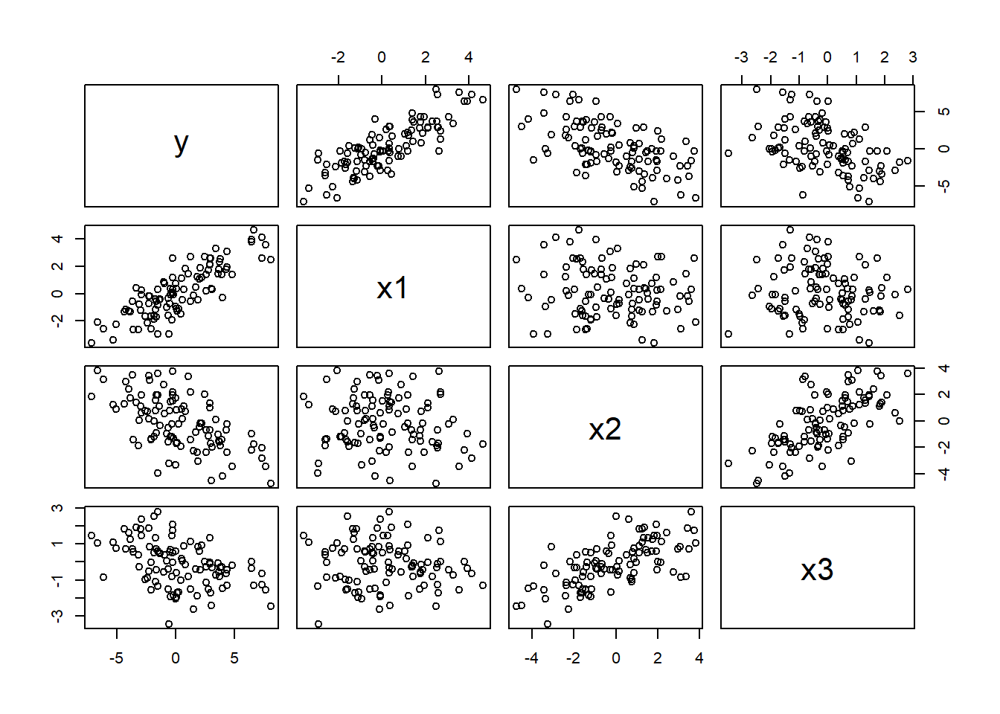
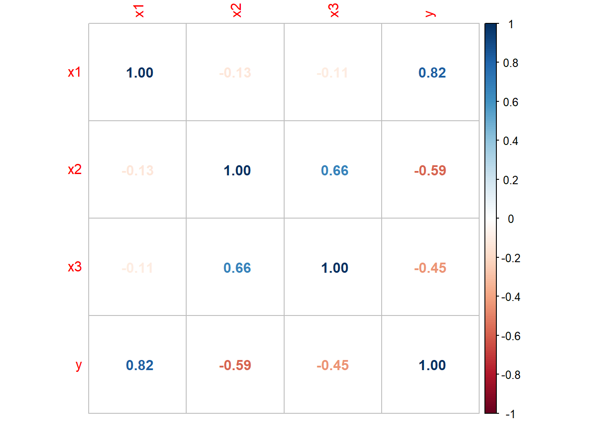
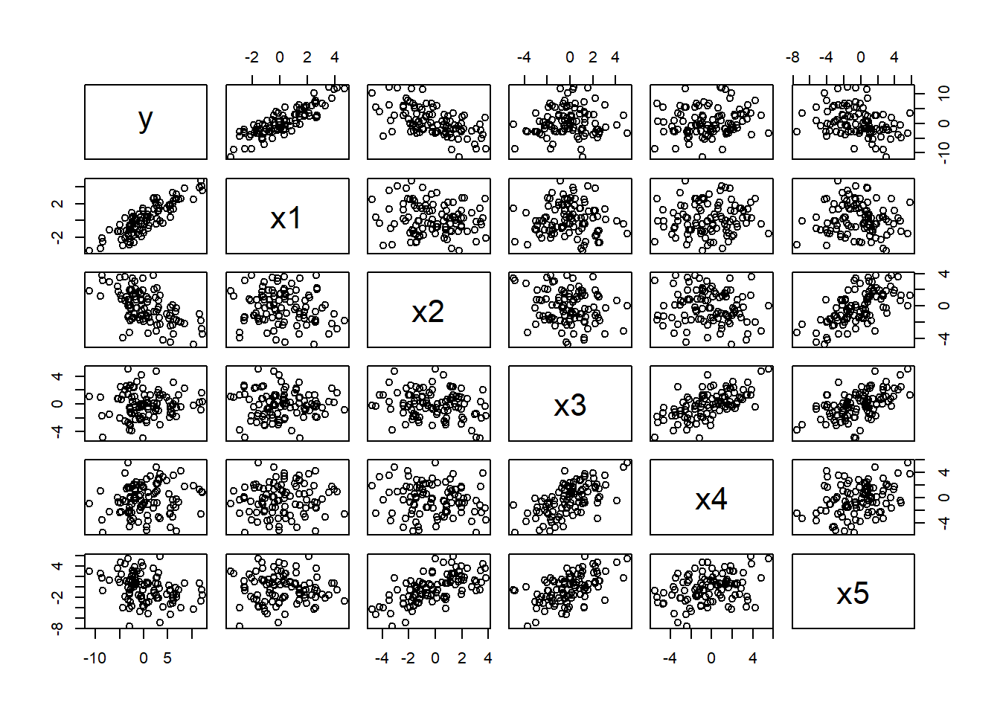
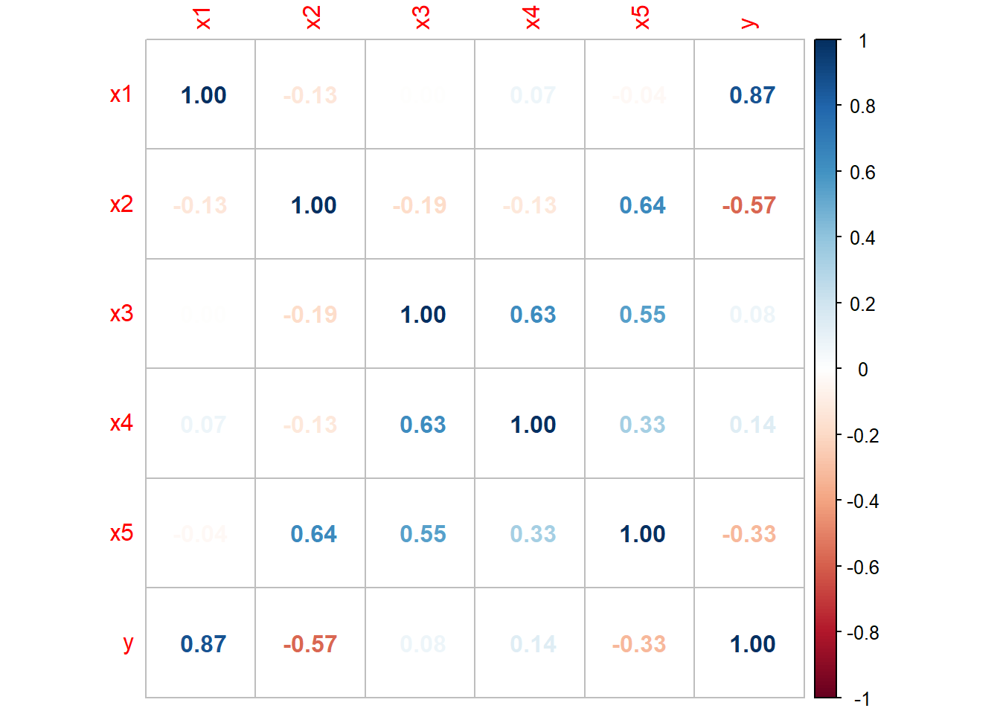

I forrige modul fokuserte vi på binære spørsmål av typen “Er det en forskjell mellom disse to populasjonene, eller ikke?”, “Er disse kjennetegnene uavhengige, eller ikke?”, og så videre. I denne modulen skal vi prøve å gå et steg lenger og tillate mer interessante spørsmål. I stedet for bare å spørre om en eller annen effekt er til stede (eller ikke), så vil vi heller finne ut hvor stor denne effekten er, hvilken retning den går, og kanskje om vi kan bruke kunnskapen vi får om statistiske sammenhenger til å si noe fornuftig om hva som vil skje for noe som vi enda ikke har observert. Da er det regresjon som gjelder, og mer spesifikt for vår del: lineær regresjon.
Regresjon er et hovedtema i MET4. Vi innfører en statistisk modell som i sin enkleste form sier at en forklaringsvariabel\(X\) henger sammen med en responsvariabel \(Y\) på en helt bestemt måte, nemlig gjennom ligningen
\[Y = \beta_0 + \beta_1 X + \epsilon.\]
Ligningen over sier at det er en lineær sammenheng mellom \(X\) og \(Y\), men at det i tillegg kommer en uforutsigbar støyvariabel \(\epsilon\) som gjør at vi ikke vil kunne observere den lineære sammenhengen direkte. Det vi derimot kan gjøre, er å bruke de observerte \(X\)er og \(Y\)er til å finne ut hvilke verdier av \(\beta_0\) og \(\beta_1\) som passer best. Til det bruker vi minste kvadraters metode, som beskrevet i videoforelesningene i denne modulen.
Vi deler arbeidet med regresjon inn i tre deler. I den første (og største) delen går vi grundig gjennom ulike sider vi den enkle lineære regresjonsmodellen over. I den andre delen ser vi på multippel regresjon som er en utvidelse av enkel regresjon der vi tillater flere forklaringsvariabler på høyre side av likhetstegnet, og i den tredje delen ser vi på ulike praktiske aspekter ved regresjonsmodellering og modellbygging.
I videoforelesningene går vi gjennom noen slides, og vi skriver et R-skript. Du kan laste disse ned ved å klikke på lenkene under:
TIPS: Hvis du ønsker å laste ned lysbildene som PDF trykker du på linken over, velger “Skriv ut”, og så skriver du ut som PDF. Før du gjør det bør du scrolle gjennom alle sidene slik at ligningene vises korrekt.
4.1 Enkel regresjon
Videoforelesninger
4.1.1 Kommentarer
Vi har sett på en del figurer som illustrerer noen pedagogiske poenger, og lærebokens kapittel 16 går detaljert til verks når de beskriver de ulike læringsmomentene:
I kapittel 16.1 kan vi lese mer om den statistiske modellen som vi kaller enkel regresjon. I kapittel 16.2 introduseres minste kvadraters metode for å estimere regresjonskoeffisientene ved hjelp av data. De viser til og med hvordan det kan gjøres manuelt ved hjelp av bildatasettet, men det er selvsagt kun for å illustrere hvodan formlene ser ut. Vi estimerer ved hjelp av R, og vi har sett i videoforelesningen hvordan vi gjør det ved hjelp av lm()-funksjonen.
Det som gjør regresjon til et statistisk problem er feilleddet \(\epsilon\). Vi tenker oss at for en gitt verdi av \(X\), så vil «naturen» regne ut verdien av \(Y\) ved å regne ut den lineære sammenhengen \(Y = \beta_0 + \beta_1 X\), og så legge til støyvariabelen \(\epsilon\) som trekkes fra en sannsynlighetsfordeling. Vi kan ikke observere direkte hvilke \(\epsilon\) som «naturen» har «trukket» (for da ville vi med en gang kunne regnet oss frem til verdiene av \(\beta_0\) og \(\beta_1\)). For gitte estimater av regresjonskoeffisientene \(\widehat \beta_0\) og \(\widehat \beta_1\) (som vi kan finne f.eks. ved hjelp av minste kvadraters metode), så kan vi regne ut de observerte residualene
Ved å analysere residualene kan vi si mer om f.eks
Er det egentlig en lineær sammenheng mellom \(X\) og \(Y\)? Hvis det er mønstre og sammenhenger i de observerte residualene, tyder det på at den enkle lineære modellen ikke fanger opp hele sammenhengen mellom \(X\) og \(Y\).
Vi kan gå mer spesifikt til verks: nøyaktig hvilke antakelser om residualene er ser ut til å være brutt? I senere økonometrikurs vil dere kunne lære mer om hvordan vi håndterer de ulike problemene.
Hvor stor er variansen til \(\epsilon\)? Det brukes videre til å sette opp den viktige signifikanstesten for om stigningstallet i regresjonen er forskjellig fra null.
Alt dette behandles grudig i bokens kapittel 16.3–16.6. Her bør teksten leses godt. Kode til bileksempelet finnes i scriptet som følger med videoforelesningene.
Når det gjelder enkel regresjon kan du sjekke om du har fått med deg det vesentligste ved å diskutere følgende spørsmål:
Hva er responsvariabelen og hva er forklaringsvariabelen i enkel regresjon?
Hva er fortolkningen av de to regresjonskoeffisientene?
Hvilket prinsipp er det vi legger til grunn når vi skal bestemme (estimere) verdien av koeffisientene ved hjelp av data?
Skriv opp formlene for koeffisientestimatene. Kan du gi en intuitiv fortolkning av disse? Er de rimelige?
Kan du ved hjelp av formelen for \(\widehat\beta_1\) utlede sammenhengen mellom stigningstallet\(\beta_1\) og korrelasjonskoeffisienten* mellom \(X\) og \(Y\)?
Hvilken rolle spiller feilleddet (\(\epsilon\))?
Skriv opp de 4 + 1 forutsetningene. Når må den siste være oppfylt? Når kan vi klare oss uten?
Hva er testobservatoren når vi tester H\(_0: \beta_1 = 0\)?
Kan du holde styr på de fire standardavvikene vi har jobbet med i denne forelesningen?
Hva mener vi med å diagnostisere en regresjonsmodell?
Hva er \(R^2\), og hva måler den?
Hva sier \(R^2\)ikke noe om?
Her er noen grunnleggende ferdigheter fra kapittel 16. Klarer du dette?
Bruke til å tilpasse en enkel regresjonsmodell for et datasett?
Bruke til å skrive ut oversiktlige regresjonstabeller?
Tolke en regresjonsutskrift?
Hente ut relevant informasjon etter en slik tilpasning?
Bruke informasjon fra regresjonsutskriften til å regne ut antall stjerner for hånd?
Lage diagnoseplott i ?
Diagnistisere en modell?
Identifisere innflytelsesrike observasjoner?
4.2 Multippel regresjon
Videoforelesninger
4.2.1 Kommentarer
I kapittel 17 utvides regresjonsbegrepet til multippel regresjon, som i prasis betyr at vi kan ha flere enn en forklaringsvariable:
\[Y = \beta_0 + \beta_1X_1 + \cdots \beta_kX_k + \epsilon,\] men utover dette er alle detaljene vi har snakket om de samme. For eksempel:
Tolkningen av regresjonskoeffisienten: En endring på en enhet i forklaringsvariabelen \(X_j\) henger sammen med \(\beta_j\) enhets endring i responsvariabelen \(Y\) (merk at jeg ikke brukker begrepet “fører til”, vi kan ikke uten videre fortolke sammenhengen som kausal!).
Analysen av residualene \(\widehat \epsilon_i = Y_i - \widehat Y_i\) er den samme og har samme formål 1–3 som over.
\(R^2\) har samme fortolkning.
R-kommandoen er den samme, vi bare sette pluss mellom forklaringsvariablene, f.eks reg <- lm(Y ~ X1 + ... + Xk, data = x)
I tillegg innfører vi noen nye begreper:
Justert\(R^2\): Vi viste i forelesningen at vi vil alltid klare å øke \(R^2\) ved å legge til forklaringsvariable, selv om de ikke har noe med problemet å gjøre. Derfor innførte vi en justert\(R^2\) som tar høyde for nettopp dette, ved å bli større bare dersom den aktuelle forklaringsvariebelen faktisk forklarer en reell mengde av variasjonen i responsvariabelen. Se avsnitt 17-2f i læreboken.
Multikolinearitet: Dersom en forklaringsvariabel er sterkt korrelert med en eller flere andre forklaringsvariabler har vi multikolinearitet. Det blir naturlig nok et problem å skille effekter fra hverandre når de i realiteten er helt eller nesten like. Ekstremtilfellet er perfekt multikolinearitet der en variabel er en eksakt lineær funksjon av en eller flere andre variable. Det typiske tilfellet er at vi har to kolonner der vi måler det samme fenomenet, men med to ulike enheter, f.eks. cm og m. Selvsagt kan vi ikke klare å identifisere en separat og uavhengig effekt av \(X\) på \(Y\) om vi skifter måleenhet, og vi vil få en feilmelding dersom vi prøver på det. Det er ekvivalent med å dele på null (every time you divide by zero, God kills a kitten!). Løsning: fjern en av kolonnene fra regresjonsanalysen.
Verre er det om to variable måler nesten det samme, men ikke helt, som i skoledataeksempelet der vi kunne bruke både innbyggertall og antall femteklassinger i kommunen som forklaringsvariabler. De henger tett sammen, men selvsagt ikke eksakt, og det virker rart å kunne knytte separate efekter til disse to variablene. I dette tilfellet får vi likevel ikke feilmeldinger, men konsekvensen kan fort bli at standardavvikene (usikkerheten!) til koeffisientestimatene eksploderer, og at ingen av variablene blir signifikant forskjellige fra null, selv det det faktisk er en sterk sammenheng mellom kommunestørrelse og prøveresultat (husk at testobservatoren: \(t = \widehat \beta_k/\sigma_{\beta_k}\) blir liten når nevneren blir stor).
F-test for multiple sammenligninger: Dette henger nøye sammen med variansanalyse (analysis of variance, ANOVA), som nå er tatt ut av pensum i kurset. For å forstå dette kan vi sette opp et eksempel, med to forklaringsvariabler: \[Y = \beta_0 + \beta_1X_1 + \beta_2X_2.\] Etter å ha brukt miste kvadraters metode for å estimere de tre koeffisientene er vi kanskje interessert i å vurdere den statsistiske signifikansene til de to stigningstallene separat. Da tester vi de to nullhypotesene \(\beta_1 = 0\) og \(\beta_2 = 0\), som vi i praksis gjør ved å se på hvor mange stjerner de får i regresjonsutskriften. Men sett at ingen av koeffisientene er signifikant forskjellige fra null, kan vi da slutte at vi ikke kan forkaste hypotesen \(\beta_1 = \beta_2 = 0\), dvs at begge koeffisientene er lik null, og at ingen av forklaringsvariablene forklarer variasjon i \(Y\)? NEI, det kan vi ikke. Vi kan for eksempel lett tenke oss at vi på grunn av multikolinearitet ikke får separate forkastninger av de to nullhypotesene, men at ved å fjerne en variabel, så blir den andre signifikant.
For å virkelig forstå dette problemet kan du godt lese starten på kapittel 14.1 samt kapittel 14.2 om multiple sammenligninger (som strengt tatt ikke er pensum), men essensen er altså:
\[\textrm{Å forkaste H}_0: \beta_1 = 0 \textrm{ og H}_0: \beta_2 = 0 \textrm{ er ikke det samme som å forkaste H}_0: \beta_1 = \beta_2 = 0!\]
For å gjennomføre den siste testen må vi sette opp en egen testobservator, som viser seg å være \(F\)-fordelt. Læreboken lister opp noen detaljer i avsnitt 17-2f, og essensen er at vi setter opp en brøk på formen \[F = \frac{\textrm{Variasjon i } Y \textrm{ som fanges opp av regresjonsmodellen med } X_1 \textrm{ og }X_2}{\textrm{Variasjon i } Y \textrm{ som fanges opp av regresjonsmodellen uten } X_1 \textrm{ og }X_2}.\] Dersom denne brøken viser seg å være stor (som definert av signifikansnivå og frihetsgrader, se lærebok), forkaster vi nullhypotesen om at begge koeffisientene begge kan være lik null. I en generell multippel regresjon med \(k\) forklaringsvariable rapporterer R F-statistic: etc, med verdien av \(F\)-observatoren i testen for \[H_0: \beta_1 = \cdots = \beta_k = 0,\] og dersom den oppgitte \(p\)-verdien er mindre enn f. eks. 5%, kan vi slutte at ikke alle koeffisientene kan være null samtidig (selv om ingen av koeffisientene i seg selv nødvendigvis er signifikant forskjellig fra null).
Som en såkalt fun fact kan vi nevne at det er enkelt å teste for signifikansen til grupper av variable på denne måten, f.eks hvis det er noen variable som måler lignende ting (si \(X_2, X_4\) og \(X_5\)). I R kan du estimere to modeller, en modell som inkluderer variablene (f.eks. reg_stor) og en modell der du tar bort de aktuelle variablene (f.eks. reg_liten). Du kan da kjøre kommandoen anova(reg_stor, reg_liten) for å teste \[H_0: \beta_2 = \beta_4 = \beta_5 = 0.\]
Kritikk av læreboken: Læreboken har en tabell på s. 701 som viser sammenhengen mellom ulike statistiske størrelser som vi kan regne ut for en regresjonsmodell. \(R^2\) kjenner vi som forklaringsgraden, \(s_{\epsilon}\) er standardavviket til residualene, \(F\) er testobservatoren for modellgyldighet som vi definerte uformelt over, og som er definert formelt nederst på s. 700, mens SSE (Sum of Squares Error) henger nøye sammen med standardavviket, som vi også kan se på s. 700. På disse sidene ser vi mange ligninger som viser hvordan disse størrelsene formelt henger sammen, og i tabellen på s. 701 ser vi blant annet at dersom SSE er liten, er også \(s_{\epsilon}\) liten, \(R^2\) er nær null, og \(F\)-observatoren er stor. Det er greit nok, men de har en ekstra kolonne som slår fast at regresjonsmodellen er good.
Her menes det ikke at regresjonsmodellen er god i den forstand at vi skal reagere med glede eller lettelse (slik noen gjerne gjør), men at variasjonen i datamaterialet i stor grad lar seg forklare av modellen vår. I et tenkt eksempel der den sanne sammenhengen mellom \(Y\) og \(X\) er gitt ved \(Y = \beta_0 + \beta_1X + \epsilon\), men der \(\beta_1\) er forholdsvis liten og \(s_{\epsilon}\) er relativt stor, vil f.eks. \(R^2\) bli liten, selv om den enkle lineære regresjonsmodellen repsesenterer sannheten og av alle tenkende mennesker må sies å være god.
Det er desverre mange lærebøker som blander disse to fortolkningene, ikke gjør det!
Her er enda noen grunnleggende begreper. Har du fått med deg dette?
Hva mener vi med at en observasjon er innflytelsesrik?
Hva er grunnen til at vi trenger justert\(R^2\) med flere forklaringsvariable?
Hva er forskjellen på perfekt og tilnærmet multikolinearitet i lineær regresjon? Hva blir konsekvensen i hvert av tilfellene?
Kan du gi en praktisk og intuitiv forklaring på hvorfor multikolinearitet nødvendigvis må være et problem?
Hva er forskjellen på statistisk og økonomisk signifikans? Kan du sette opp konkrete eksempler der vi kan estimere statistisk signifikante, men ikke økonomisk signifikante effekter i multippel regresjon? Hva med den motsatte situasjonen, økonomisk signifikant, men ikke statistisk signifikant?
Grunnleggende ferdigheter: Klarer du dette?
Bruke R til å tilpasse en multippel regresjonsmodell for et datasett?
Bruke R til å finne særlig innflytelsesrike observasjoner?
Tolke en multippel regresjonsutskrift?
4.3 Modellbygging
Videoforelesninger
4.3.1 Kommentarer
Kapittel 18 dekker de grunnleggende begrepene innen modellbygging. I kap. 18.1 snakkes det om polynomiske modeller, i kap. 18.2 behandles dummyvariabler. Kapittel 18.3 og 18.4 handler om hvordan vi i praksis kan jobbe for å velge ut variable i en gitt situasjon. Forelesningene dekker i grunn greit det vi skal få med oss her. Som en sjekk om du har fått med deg det vesentlige, kan du svare på følgende spørsmål:
Vi har lært tre typer log-transformasjoner. Hva blir fortolkningen av koeffisientene for hver av disse?
Kan du nevne tre gode grunner til at log-transformasjoner er nyttige?
Hvorfor sier vi at følgende modell er lineær? \(Y = \beta_0 + \beta_1X + \beta_1X^2 + \epsilon\)
Vil vi ikke få problemer med multikolinearitet i modellen over?
Nevn en veldig god grunn til at vi må være ytterst forsiktig med polynomtransformasjoner.
Hva er en dummyvariabel?
Hva er fortolkningen av regresjonskoeffisienten til en dummyvariabel?
Hva er fortolkningen av regresjonskoeffisienten til et interaksjonsledd mellom målevariabelen \(X\) og dummyvariabelen \(D\)?
Et utrolig viktig poeng, men bruk tid til å tenke over og formulere et svar: Hvorfor er det viktig å tenke på multippel testing i sammenheng med variabelutvelgelse?
Grunnleggende ferdigheter: Klarer du dette?
Bruke logtransformasjoner i R?
Bruke poynomtransformasjner i R?
Sette opp en fornuftig regresjonsmodell ved å ta utgangspunkt i et datasett og et analyseformål, og argumentere godt for dine valg? Denne ferdigheten har blitt testet på hver eneste hjemmeeksamen i manns minne!
4.4 Oppgaver
4.4.1 Regresjon med en forklaringsvariabel
Oppgave 1
Forskere har brukt statistikk til å undersøke om TV-titting er forbundet med overvekt. De har samlet inn data fra 15 10-åringer om antall timer TV-titting per uke og antall kilo overvekt hos barnet (rapportert som differanse fra normalvekt). De innsamlede dataene er oppsummert i tabellen:
TV_titting
Overvekt
42
17
35
5
28
-1
34
0
37
13
38
15
32
5
33
7
18
-7
28
7
36
6
29
7
29
4
34
15
18
-5
Bruk R til å lage et spredningsplott av resultatene. Hva tror du om forholdet mellom de to variablene utfra figuren?
Sett opp regresjonsuttrykket for å undersøke om overvekt er forbundet med TV-titting. La overvekt være responsvariabelen. Hva er betydningen av hver parameter i uttrykket?
Bruk R til å estimere parameterne. Hva kan koeffisientene fortelle deg om forholdet mellom overvekt og TV-titting?
Beregn et 95 % konfidensintervall for \(\beta_1\). Hint: Bruk ‘summary()’ på regresjonsmodellen for å finne \(S(\hat{\beta}_1)\) som da gitt i kolonnen “Std. Error”.
Bruk R til å beregne et 95 % prediksjonsintervall for overvekt i kilo for et barn som ser på TV 30 timer i uken. Hva forteller intervallet deg?
Bruk R til å beregne et 95 % konfidensintervall for gjennomsnittlig overvekt for barn som ser 30 timer på TV i uken. Hvordan er tolkningen av dette intervallet forskjellig fra det i oppgave d?
Hva er forventet overvekt for barn som ser 0 timer på TV i uken utfra modellen? Hva kan være problematisk ved å gjøre denne type analyser av en regresjonsmodell?
Ser vi bort fra dataene ville \(\beta_0\) være forventet overvekt for personer som ikke ser på tv. Av spredningsplottet ser det derimot ut som at vi ikke har data ved 0 TV-titting og det er derfor ikke fornuftig med en direkte tolkning av denne parameteren.
Under antagelsen om at regresjonsmodellen er gyldig forteller \(\beta_1\) hvor mye vi forventer at overvekten øker dersom man øker TV-tittingen med 1 time.
Vi estimerer en regresjonsmodell fra dataene og skriver ut tabellen med resultatene:
Call:
lm(formula = Overvekt ~ TV_titting, data = df_tv)
Residuals:
Min 1Q Median 3Q Max
-8.1917 -2.6147 0.2795 2.6785 6.8083
Coefficients:
Estimate Std. Error t value Pr(>|t|)
(Intercept) -22.2124 5.1359 -4.325 0.000824 ***
TV_titting 0.8942 0.1602 5.583 8.88e-05 ***
---
Signif. codes: 0 '***' 0.001 '**' 0.01 '*' 0.05 '.' 0.1 ' ' 1
Residual standard error: 4.026 on 13 degrees of freedom
Multiple R-squared: 0.7057, Adjusted R-squared: 0.683
F-statistic: 31.17 on 1 and 13 DF, p-value: 8.88e-05
# For en finere utskrift kan du bruke følgende:# library(stargazer)# stargazer(reg, type="text")
Det er tydelig sigifikans for at hver av parameterne er ulik null. For \(\beta_1\) betyr dette at trenden vi observerte i spredningplottet var signifikant. Videre kan vi tolke det positive fortegnet til \(\beta_1\) som at flere timer TV-titting er relatert med økt overvekt.
Merk at vi ikke kan si utfra dataene at mer TV-titting fører til overvekt. En mer riktig tolkning er å si at de forekommer samtidig i populasjonen. (Dersom vi ønsket å finne ut av kausaliteten måtte man på et tilfeldig utvalg av barn satt noen til å se mye på TV og noen til å se mindre på TV, og deretter undersøkt om dette resulterte i statistisk signifikant høyere overvekt hos en av gruppene. Dette krysser imidlertid noen etiske grenser om å påføre barn overvekt, dersom hypotesen er sann.)
Fra R utskriften ser vi at \(S(\hat{\beta}_1)=0.1602\). Videre er \(t_{0.025, 13} = 2.16\). Et 95 % konfidensintervall for \(\beta_1\) er da gitt ved:
Dersom vi trekker et nytt barn som ser 30 timer på TV per uke, vil barnet i 95 % av tilfellene være innenfor prediksjonsintervallet dersom vi hadde gjentatt dette mange ganger.
Konfidensintervallet viser hvor gjennomsnittet av målinger på et nytt sett med barn som ser 30 timer på TV per uke vil ligge i 95 % av nye eksperimenter.
Beste gjetning er at barn som ser 0 timer på TV i uken er 22.2 kg under normalvekt (!). Et kjapt søk viser at barn på 10 år veier mellom 25.5 og 39 kg. Det høres urimelig ut at veldig lite TV-titting har sammenheng med ekstrem underernæring blant den samme populasjonen av barn som ser rundt 30 timer på TV i uken.
Det er flere ting som kan gå galt når man gjør en slik analyse av en modell:
Modellen kan være gal. Vi antar et lineær forhold mellom TV-titting og overvekt, noe som ikke trenger å være riktig ved 0 timer TV-titting.
Datasettet dekker ikke den gruppen barn som ser 0 timer på TV, så med mindre modellen er helt riktig (noe den sjelden er) vil den ikke kunne generalisere så langt utenfor området vi estimerte parameterne på.
Med mindre forholdet mellom TV-titting og overvekt er kausalt, kan det være at sammenhengen som er observert mellom dem i dataene ikke vil være det samme langt utenfor det aktuelle data-området.
Oppgave 2
Vi skal undersøke om alder har sammenheng med hvor lang tid man bruker på et puslespill. Vi har data fra et tilfeldig utvalg av 210 voksne personer om alder og tid brukt på oppgaven. Uttrykk alder som \(X\) og tid i minutter som \(Y\). Følgende deskriptive statistikker er beregnet for datasettet: \(s_{xy}= 8, s_x^2, = 110, s_y^2 = 42, \bar{x} = 40, \bar{y} = 20\) hvor \(\bar{x},\bar{y}\) er gjennomsnittene.
Sett opp regresjonsuttrykket for sammenhengen mellom \(X\), \(Y\) og støy \(\epsilon\). Hva er antagelsen for sammenhengen mellom X og \(\epsilon\)?
Hva er uttrykket for beste gjetning/prediksjon \(\hat{Y}_i\) gitt en verdi av forklaringsvariabelen \(X_i\) for regresjonsmodellen du har satt opp? Hva er uttrykket for residualene?
Vis at hva uttrykket for regresjonsparameterne blir når de estimeres med minste kvadraters metode. Regn ut minste kvadraters estimat av parameterne.
Løsning
Regresjonsuttrykket er \[\begin{equation}
Y = \beta_0 + \beta_1 X + \epsilon
\end{equation}\]
Vi antar at forklaringsvariabelen \(X\) er uavhenging støyen \(\epsilon\). Dermed vil også kovariansen være null, \[\begin{equation}
\text{Cov}(X, \epsilon) = 0.
\end{equation}\]
Beste gjetning er forvetningen betinget på utfallet av forklaringsvariabelen \(X\): \[\begin{align}
\hat{Y}_i &= E[Y|X = X_i] = E[\beta_0 + \beta_1 X + \epsilon|X = X_i] \\
&= \beta_0 + \beta_1 X_i + E[\epsilon|X = X_i] \\
&= \beta_0 + \beta_1 X_i + E[\epsilon] \\
&= \beta_0 + \beta_1 X_i
\end{align}\]
Residualene er forskjellen mellom data og prediksjon
Figurene nedenfor viser residualene (feilleddene) vi får ut fra et par ulike modeller. Ser plottene ut til å tilfredsstille kravene for enkel regresjon? Hvis ikke, hva ser ut til å være galt for hver av figurene? Hvordan kan man håndtere brudd på betingelsene i de ulike situasjonene?




Løsning
Her ser støyleddet ut som det har konstant varians og forventing lik null. Det betyr at antagelsene er oppfylt.
Støyen er symmetrisk om null, men kan se ut som den øker. Altså er det brudd på antagelsen om konstant varians. Økningen ser ut til å være jevn, og en log-transformasjon kunne i dette tilfellet vært til hjelp.
Her ser det ut som at vi har perioder med høy varians etterfulgt av perioder med lavere varians. Vi skal ikke se så mye nærmere på hvordan dette kan håndteres i MET4, men man kan komme over det i senere kurs.
Her ser det ut som at støyen har en relasjon i tid, og at høye/lave verdier henger sammen med høye/laver verdier. Det er ikke åpenbart at det er dette som foregår, og vi burde undersøkt det nærmere. Senere i kurset skal vi håndtere dette ved bruk av tidsrekkemodeller.
Merk at det ikke alltid er lett å se direkte fra figurene hva som er galt. Riktig bruk av statistiske tester og diagnoseplott kan hjelpe med å oppdage brudd på betingelsene. Figurene i denne oppgaven er generert ved simulering, vi kan derfor vite akkurat hva som er galt. For virkelige data vil kunne være vanskeligere å tolke fordi det ikke nødvendigvis er én ting som er galt om gangen. Man må også være på vakt for overtolkning av det som egentlig er tilfeldigheter.
Oppgave 4
I en analyse skal en økonom teste om å ta høyere utdanning fører til at arbeidstakere får høyere lønn i arbeidslivet. Hun kjører følgende regresjon, som tester sammenhengen mellom (log av) lønn fem år etter endt utdanning og antall år med utdanning, på individnivå:
\[ ln(\text{lønn}_i) = \beta_0+\beta_1\text{antall år med utdanning}_i+\epsilon_i \]
Er det grunn til å være bekymret for utelatt variabelskjevhet her? I hvilken retning påvirker den i så fall koeffisienten \(\beta_1\)?
Økonomen argumenterer for at \(\beta_1\) måler hvor mye høyere lønn en arbeidstaker får, dersom den tar ett års ekstra utdanning. Er dette en rimelig tolkning?
Hvordan ville du tolket \(\beta_1\)?
Løsning
Dette er ment som en refleksjonsoppgave, og har ikke nødvendigvis én fasit. Under er noen momenter det kan være naturlig å trekke frem.
Det kan tenkes at det er forskjell i karakteristikkene på personer som tar høyere utdanning. De for eksempel være mer akademisk/analytisk anlagte, eller ha foreldre med bedre økonomi. Dette er også faktorer som bidrar til at lønnen kan bli høyere. Det er altså utelatte variabler her som er positivt korrelert med både forklaringsvariabelen (lengde på utdanning) og utfallsvariabelen (lønn), og som dermed trekker \(\beta_1\) opp.
Nei, dette er ikke en rimelig tolkning. Eksogenitetsantakelsen er brutt når vi har utelatte variabler, og her fanger koeffisienten opp mer enn bare effekten av ett års ekstra utdanning på arbeidstakerens lønn.
Koeffisienten \(\beta_1\) kan tolkes som at ett års ekstra utdanning er assosiert med $_1 $ % høyere lønn. Alternativt kan man for eksempel si at arbeidstakere med ett år lengre utdanning i gjennomsnitt har \(\beta_1\) % høyere lønn enn de som ett år kortere utdanning. Merk at vi her tolker \(\beta_1\) som prosent fordi vi har tatt logaritmen av utfallsvariabelen, og dermed får en (tilnærmet) prosentvis endring.
4.4.2 Multippel regresjon og modellbygging
Oppgave 1
Denne oppgaven skal gi et forhold til hvordan teorien funker i praksis. Vi skal simulere data fra konstruerte modeller gjøre analyser på dem. Fordelen med å begynne her er at man får er forhold til hvordan statistikk kan og bør tolkes utfra teorien. Med virkelige data vil antagelsene som ligger til grunn for modellene stort sett være brutt, i større eller mindre grad, og kjernen i god statistisk analyse er å vite hva man kan og ikke kan gjøre likevel. God kjennskap til hvordan det burde funke i teorien er en viktig byggestein for statistisk forståelse.
Vi generer opp data som skal brukes til å estimere en model. rnorm trekker tall fra en standard normalfordeling. mutate() legger til nye kolonner i dataframe-en basert på allerede eksisterende kolonner. set.seed() setter startpunktet for pseudotilfeldige tall, og om du setter samme seed får du de samme tilfeldige tallene som vi har brukt.
Hva er de eksakte parameterne i modellen som passer til dataene vi har generert, og hva er fordelingen til hver av forklaringsvariablene og støy-leddet? Er betingelsen om uavhengig feilledd oppfylt?
Generér opp dataene selv og estimer parameterne basert på dataene. Tolk estimatene.
Lag 95 % konfidens- og prediksjonsintervaller for en prediksjon hvor \(X_1=1, X_2=1\) basert på estimatene dine.
Hva er eksakt prediksjonsintervall basert på modellen vi har generert data fra? Ser dine prediksjonsintervaller rimelige ut utfra dette? Hvorfor er de ikke eksakt like?
Stemmer konfidensintervallet overens med modellen? Tolk konfidensintervallet basert på at vi kan generere opp nye data (med et annet seed).
Hva er P-verdien i F-test for at vi har en signifikant sammenheng mellom responsvariabelen og forklaringsvariablene?
Løsning
Fordelingen til forklaringsvariablene er \[\begin{align}
X_1, X_2 \sim N(0, 2)
\end{align}\] fordi vi har trukket dem fra en normalfordeling med forventning 0 og standardavvik 2. Videre er fordelingen til støyleddet en standard normalfordeling \(\epsilon\sim N(0,1)\). Betingelsen om uavhengig feilledd er oppfylt siden vi ikke har brukt feilleddet til å generere forklaringsvariablene. Det er responsvariabelen, men den skal altså være avhengig av støyleddet. Modellen tar formen \[\begin{align}
Y = 2 X_1 - X_2 + \epsilon,\quad \epsilon \sim N(0, 1),
\end{align}\] hvor parameterne er eksakt fordi vi har laget dataene selv.
reg <-lm(y ~ x1 + x2, data = df_mdl)stargazer(reg, type ="text")
Vi ser at estimatene av koeffisientene er signifikante, og at sanne verdier er innenfor konfidensintervallet for hver av dem. Det er ikke et konstantledd i modellen vår, noe som stemmer overens med at den ikke er signifikant forskjellig fra null i regresjonsmodellen.
Eksakt prediksjonsintervall for modellen som genererte dataene er \[\begin{align}
\bar{Y}|X_1,X_2 \pm \alpha_{0.025} \sigma_{\epsilon} &= 2 \cdot 1 - 1 \cdot 1 \pm 1.96 \cdot 1 \\
&= 1 \pm 1.96 \\
&= [-0.96, 2.96].
\end{align}\] Estimert prediksjonsintervall er bredere enn det estimerte intervallet. Dette kommer av usikkerhet knyttet til estimatene av forventning og standardfeil. Det er benyttet T-test i estimatet av prediksjonsintervallet for å ta hensyn til denne usikkerheten. Man burde ikke få smalere prediksjonsintervaller enn det som faktisk er “sant” med mindre noen av modellantagelsene er usann. Merk at når vi generer opp data selv vet vi sannheten, det gjør vi ikke for virkelige data.
Vi burde få at \(\bar{Y}|X_1,X_2 = 1\) er innenfor konfidensintervallet, noe ser ut til å være oppfylt. Tolkningen er at dersom vi kjører analysen på mange ulike datasett vil \(\bar{Y}|X_1,X_2 = 1\) havne innenfor konfidensintervallet i 95 % av tilfellene. Dette kan du prøve selv, bare pass på at du ikke setter seed-et før du generer opp et nytt datasett.
F-statistikken er angitt som \(1094.997\) med frihetsgrader \(2, 97\). P-verdien regnes som
pf(1094.997, 2, 97, lower.tail =FALSE)
[1] 2.716911e-67
som er veldig liten. Altså bekrefter analysen at det er sammenheng mellom forklaringsvariablene og responsvariabelen. Hva ville du tenkt var galt om vi ikke fikk denne konklusjonen fra F-testen, gitt den modellen vi har brukt til å generere dataene? Hint: Det er faktisk en reell sammenheng her.
Oppgave 2
Denne oppgaven følger samme premiss som oppgave 1, men handler om kolinearitet. Last ned datasettene 1 og 2, hvor y er responsvariabel og forklaringsvariable er navngitt x.
Disse dataene er lagret som .RData filer. For å laste inn dataene i R laster du filene over ned i en mappe, setter mappestien til denne mappen og kjører følgende R-kommandoer:
Hva må man passe dersom man skal lage en regresjonsmodell for responsen Y?
Løsning
Vi kan begynne med å plotte forholdet mellom de ulike variablene:
pairs(y ~ ., data = df_colin1)

corrplot(cor(df_colin1), method ="number")

Her ser det ut som vi har et forhold mellom \((X_2, X_3)\). Videre ser det ut som at alle tre forklaringsvariable har en sammenheng med responsvariablen \(Y\).
reg_colin1 <-lm(y ~ ., data = df_colin1)stargazer(reg_colin1, type ="text")
\(X_1\) og \(X_2\) kommer ut som signifikante, og \(X_3\) ved lavere signifikansnivå.
Vi kan sjekke variance inflation factor (VIF)
vif(reg_colin1)
x1 x2 x3
1.018945 1.785963 1.774712
som oppgir at estimeringen i seg selv ikke burde være noe problem.
Kommentarer:
Det reelle forholdet mellom variablene i dette eksempelet er \[\begin{align}
X_1 &\sim N(0, 2) \\
X_2 &\sim N(0, 2) \\
X_3 &= 0.5 X_2 + \epsilon_3 \quad \epsilon_3 \sim N(0,1) \\
Y &= 1.3 X_1 - 0.8 X_2 + \epsilon, \quad \epsilon \sim N(0,1),
\end{align}\] og vi kan tenke oss at dette representerer det kausale forholdet mellom variablene. Siden vi har generert dataene kan vi si det.
Det er videre interessant å merke seg i dette eksempelet at \(X_3\) kommer ut med en signifikant koeffisient selv om den rent kausalt ikke har noen sammenheng med \(Y\). \(X_3\) er kun relatert til \(X_2\).
Dersom man ønsker å gjøre prediksjon kan det være forklaringskraft i \(X_3\) for å gjøre prediksjon av \(Y\), men i så tilfelle antas det at forholdet mellom \((X_2, X_3)\) også vedvarer i fremtiden. Dersom man skal gjøre inferens om en tenkt kausal sammenheng er det mulig å gå på en blemme i et tilfelle som dette.
Hvis man ønsker å forklare noe og det er sammenheng mellom to forklaringsvariable kan det fra økonomisk prespektiv være interessant å spørre seg om man bryr seg om \(X_3\) i det hele tatt og skal ta den ut. Kanksje \(X_3\) er vanskelig å samle inn data om eller den åpenbart ikke har sammenheng med Y. Om den åpenbart ikke skal ha sammenheng med \(Y\) kan støyleddet \(\epsilon_3\) også skape unødig støy i prediksjonene.
Plott forholdet mellom de ulike variablene:
pairs(y ~ ., data = df_colin2)

corrplot(cor(df_colin2), method ="number")

Her ser vi et tydelig forhold mellom parene \((X_3, X_4)\), \((X_4, X_5)\), \((X_3, X_5)\) og \((X_2, X_5)\). Ellers ser det kun ut som det er et tydelig forhold mellom \(Y\) og \(X_1, X_2\). Med så mange forhold kan det være snakk om multikolinearitet, som ikke er så lett å se utfra 2D-plott.
reg_colin2 <-lm(y ~ ., data = df_colin2)stargazer(reg_colin2, type ="text")
hvor vi ser at \(X_5\) nærmer seg problematisk område for å få en overdreven varians i estimatene.
Dersom målet er å estimere sammenheng mellom alle forklaringsvariable og \(Y\) vil dette kunne gå gjennom siden VIF ikke er altfor høy. Hvis det derimot er snakk om modellbygging bør man tenke gjennom om noen av variablene ikke er så viktige og bør tas ut.
Kommentarer:
Det reelle forholdet mellom variablene i dette eksempelet er \[\begin{align}
X_1 &\sim N(0, 2) \\
X_2 &\sim N(0, 2) \\
X_3 &\sim N(0, 2) \\
X_4 &= X_3 + \epsilon_4, \quad \epsilon_4 \sim N(0,2) \\
X_5 &= X_2 + X_3 + \epsilon_5, \quad \epsilon_5 \sim N(0,1) \\
Y &= 2 X_1 - X_2 + \epsilon, \quad \epsilon \sim N(0,1)
\end{align}\]
Her kan vi igjen merke oss at variablene \(X_3, X_4, X_5\) kommer inn i regresjonsmodellen med noen koeffisienter som er svakt signifikante. I dette tilfellet trenger ikke dette ha så mye å si. Likevel, ettersom det ikke er noen direkte sammenheng mellom \(X_3, X_4, X_5\) ville det vært ideelt å ikke ha dem med i regresjonsmodellen for å unngå feilestimering av koeffisientene til \(X_1\) og \(X_2\). Fra anvendt statistikk perspektiv bør man tenke gjennom om det gir mening at \(X_3, X_4, X_5\) forklarer \(Y\).
4.5 Relevante R-kommandoer
Under følger en liste over hvilke oppgaver du skal klare i R fra denne modulen. Vår policy er at R-kommandoene under er tilstrekkelige for å løse oppgavene i datalabber og eksamen i MET4. Det er med andre ord ikke nødvendig å lære seg teknikker utover det som er listet opp eksplisitt i listen under. Eventuelle nye teknikker som trengs for å løse en bestemt oppgave vil bli oppgitt og forklart dersom det er nødvendig. Det antas i tillegg at du kan den grunnleggende R-syntaksen som er dekket under [Introduksjon til R].
Tilpasse en lineær regresjonsmodell
Her er et lekedatasett med tre forklaringsvariabler x1, x2 og x3, samt en responsvariabel y: data-reg.xsls.
# Last inn datalibrary(readxl)df <-read_excel("data-reg.xlsx")# Syntaksen for å tilpasse en lineær regresjonsmodell med responsvariabel y og# forklaringsvariabler x1, x2, x3 i datasettet df er som følger:reg1 <-lm(y ~ x1 + x2 + x3, data = df)# Dersom vi vil ha med interaksjonsledded mellom x1 og x3 kan vi skrive# kommandoen under. Da vil også x1 og x3 automatisk bli med som variabler i# tillegg til interaksjonsledde x1*x3.reg2 <-lm(y ~ x1 + x2*x3, data = df)# Log transformasjoner kan vi skrive rett inn i formelenreg3 <-lm(log(y) ~ x1 +log(x2) + x3, data = df)# Andre transformasjoner, som for eksempel dersom vi ønsker å ta med# andregradsleddet x1^2, er greiest å få til dersom vi først lager en ny kolonne# med kvadratene til x1, og så lager til regresjonen på vanlig måte:df_ny <- df %>%mutate(x1_kvadrat = x1^2)reg4 <-lm(y ~ x1 + x1_kvadrat+ x2 + x3, data = df_ny)# Vi kan skrive ut et sammendrag for regresjonsmodellen ved hjelp av summary():summary(reg1)# Pakken stargazer inneholder en funksjon for å lage pene regresjonstabeller:library(stargazer)stargazer(reg1, reg2, type ="text")# Man kan endre type-argumentet til "html", og sette out-argumentet til et# filnavn hvis du vil skrive ut tabellen til en fil.
Prediksjoner, med konfidens- og prediksjonsintervall
La oss si at vi ønsker å predikere verdien av responsvariabelen for følgende verdier av forklaringsvariablene:
x1
x2
x3
10
95
1
20
96
1
30
100
0
Da må vi først samle verdiene av forklaringsvariablene i en data frame; det kan vi enten gjøre direkte i R:
Et alternativ kan være å lage til et regneark i Excel, og så lese det inn ved hjelp av read_excel(). Det er viktig at variabelnavnene i det nye datasettet er eksakt de samme som forklaringsvariablene i datasettet du brukte til å estimere regresjonsmodellen! Vi kan lage prediksjon med 95% konfidensintervall ved hjelp av predict():
Resultatet blir en ny data frame med kolonnene fit (prediksjoner), samt lwr og upr, som inneholder nedre og øvre grense i konfidensintervallet henholdsvis. Du kan endre til prediksjonsintervaller ved å bytte ut "confidence" med "prediction" (eventuelt "none" hvis du ikke ønsker noe intervall).
Lage residualplott
Vi må kunne lage følgende residualplott i R, her demonstrert med regresjonsmodellen reg1 som vi laget over:
# Henter ut residualer og predikerte verdier fra modellen, og setter de inn som # kolonner i en dataframe:residualer <-data.frame(residualer = reg1$residuals,predikert = reg1$fitted.values)# Spredningsplott, residualer mot predikerte verdierggplot(residualer, aes(x = predikert, y = residualer)) +geom_point()# Autokorrelasjonsplottacf(reg1$residuals)# Histogram for å sjekke normalantakelsenggplot(residualer, aes(x = residualer)) +geom_histogram()# QQ-plott, observasjonene ligger langs en rett linje hvis de er normalfordelteggplot(residualer, aes(sample = residualer)) +stat_qq() +stat_qq_line()# Regner ut og plotter Cooks avstand:infl <-influence.measures(reg1)# Lager enkelt plott av Cooks avstandcooks_avstand <-data.frame(obs =1:nrow(df),cook = infl$infmat[, "cook.d"],cook_infl = infl$is.inf[, "cook.d"])ggplot(cooks_avstand, aes(x = obs, y = cook)) +geom_col()
Alle plottene over kan justeres og pyntes, for eksempel ved å gjøre endringer som i R-videoen om plotting. Se også forelesningsscriptet for flere tips om presentasjon av residualplott.